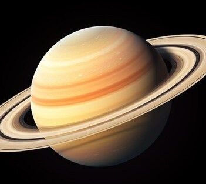

Saturn is the sixth planet from the Sun and is most famous for its magnificent ring system, made primarily of ice particles and rocky debris. It's a gas giant, second in size only to Jupiter, and is primarily composed of hydrogen and helium.
The planet is known for its yellowish hue and banded appearance. Its low density means it would float in water, and it rotates rapidly, with a day lasting only about 10.7 hours.
Saturn has over 140 known moons, including Titan—larger than Mercury and known for its thick atmosphere and liquid methane lakes. Other notable moons include Enceladus, which ejects water vapor and shows signs of a subsurface ocean.
The Cassini spacecraft, which orbited Saturn from 2004 to 2017, provided a wealth of information about the planet, its rings, and its moons before dramatically plunging into the planet’s atmosphere at the end of its mission.
| Feature | Details |
|---|---|
| Diameter | 116,460 km (72,366 miles) |
| Distance from Sun | 1.43 billion km (890 million miles) |
| Orbital Period | 29.5 Earth years |
| Rotation Period | 10.7 hours |
| Atmosphere | Hydrogen, Helium |
| Moons | 140+ known |
| Rings | Yes (most prominent of any planet) |
| Magnetic Field | Yes (powerful) |
| Famous Moon | Titan |
| First Spacecraft Visit | Pioneer 11 (1979) |
| Major Mission | Cassini (2004–2017) |